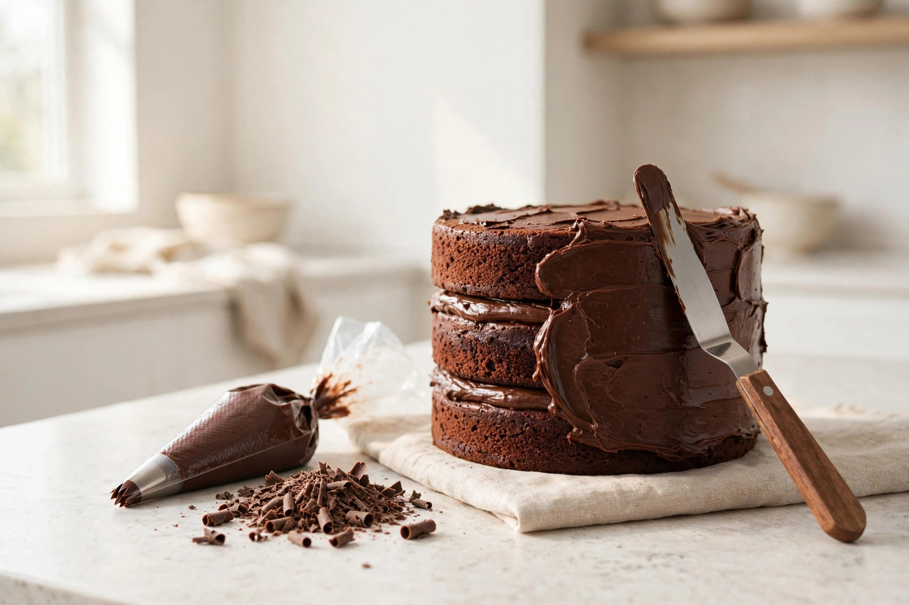

Cake Wreck Cover-Ups: The Emergency Rescue Kit

So the cake didn't go as planned. Frosting slid, piping wobbled, layers leaned like a tower in Pisa, or the lettering reads "Hapy Birtday." Take a breath — you have options better than the bin. Professional decorators fix disasters for a living; they just call it "finishing." Here's how to triage your wreck and cover it up before the doorbell rings.
Step 0: Triage — Smooth, Cover, or Serve-as-Is?
Before you touch anything, decide which lane you're in. Ask these four questions:
- Does the cake hold its shape? If yes — skip to the cover-up kit. If it's sliding or leaning like it paid off the building inspector, you need the freezer first, not the sprinkles.
- Is the frosting ugly, or is it damaged? Uneven, streaky, or lumpy frosting can be smoothed. Cracked, torn, or bleeding frosting gets covered — smoothing makes cracks worse.
- Are there broken pieces? A cracked layer can be glued back with buttercream and set in the freezer for 5 minutes to lock it in place before you frost over it.
- Is it lettering that's the problem? Messy writing can be scraped off a chilled, firm cake without hurting the layer underneath — or tidied with a toothpick. Chilling first is the whole trick.
The lanes: structurally fine + ugly frosting → chill and smooth (30 minutes). Ugly beyond smoothing → cover it (20 minutes). Broken pieces → glue with buttercream, freeze 5 minutes, then cover. Everything failed → serve it proudly as a funny-baking mascot.
The cover-up kit: five weapons of frosting destruction
Keep these on hand and almost nothing is unfixable:
- Chocolate shards. Melt chocolate, spread it thin on parchment paper, let it set, and break it into irregular pieces. Press the shards around the sides and top of the cake. They hide uneven frosting and messy piping under an intentional designer finish.
- Piped flower clusters. A piping bag with one tip and some buttercream turns any flaw into a bouquet: pipe rosettes or swirls directly over air bubbles, cracks, or the spot where the stencil went wrong. Strategic flowers have rescued more cakes than any technique in history.
- Fresh fruit and edible flowers. Sliced strawberries, raspberries, and edible flowers like pansies or violets transform a cake's appearance — and nobody inspects the frosting underneath a strawberry.
- The sprinkle zone. Edible glitter, nonpareils, or a dusting of cocoa powder draws every eye in the room. Choose colors that match the cake so it looks deliberate, not desperate.
- Buttercream as glue. For broken layers or pieces that fell off: press buttercream between the pieces, push them where they belong, and freeze the cake for 5 minutes. The set buttercream locks the repair in place, and your final frosting layer hides the crime scene.
The 20-minute chocolate-shard cover-up
The full emergency procedure, tested against real pro techniques. Start the clock.
- Chill the cake, 15–20 minutes. Pop the frosted cake into the fridge. Cold frosting hardens slightly, which makes everything after this easier — smoothing, scraping, and covering all work better on firm icing.
- Smooth what you can. Dip an offset spatula in hot water, dry it on a towel, and run it gently along the sides. The heat melts away the worst lumps. Wipe the spatula dry between passes so water doesn't ruin the icing.
- Make the shards. Melt a bar of chocolate, spread it thin on parchment, and let it set (the fridge speeds this up). Break it into irregular, artsy pieces — irregular is the look; symmetry would look store-bought anyway.
- Place the shards. Press the chocolate pieces around the sides and scatter a few across the top, covering the worst of the uneven frosting. Work fast while they're cold so they don't melt on your fingers.
- Finish with sparkle. A dusting of cocoa powder, a few sprinkles, or some edible glitter diverts attention from anything left. Step back, check it from all angles — and stop. Over-fixing is how cakes get a second wreck.
Fixes by time budget
- 30 minutes to the doorbell: skip smoothing. Go straight to the sprinkle zone — cocoa dusting, sprinkles, edible glitter — plus a few berries or piped rosettes over the worst spots. Distraction beats perfection on a deadline.
- 3 hours: the full chocolate-shard cover-up above, with time to chill properly and fix one broken piece with buttercream glue plus a 5-minute freezer set.
- Overnight: the nuclear option. Strip the frosting, apply a thin crumb coat — the cake equivalent of paint primer, sealing the surface — then let the cake set overnight so everything is firm before decorating for real. Pros do this daily; it's technique, not cheating.
What success looks like
Success is not a bakery-window cake. Success is: guests photograph it before cutting it. Nobody asks what went wrong. Someone says "wow, you made this?" — and you say "yes," which is true. The frosting is slightly wobbly, the shards are uneven, and it tastes like cake. That's the game: taste first, photograph second, apologize never.
FAQ
Is covering up mistakes "cheating"?
No. Professional bakers apply a crumb coat specifically to hide flaws — it's a thin primer layer of frosting under the real frosting. Covering up is the technique; the mistake was just the draft.
My cake layer actually broke in half. Is it done for?
Not even close. Press buttercream between the broken pieces as glue, push them back where they belong, and set the cake in the freezer for 5 minutes. The firm buttercream locks the repair, and your final frosting hides the crime scene.
The lettering looks like a ransom note. Help?
Chill the cake until the frosting is firm, then scrape the lettering off gently without damaging the layer underneath — or nudge the letters into shape with a toothpick. Rewriting on cold frosting is ten times easier than on soft.